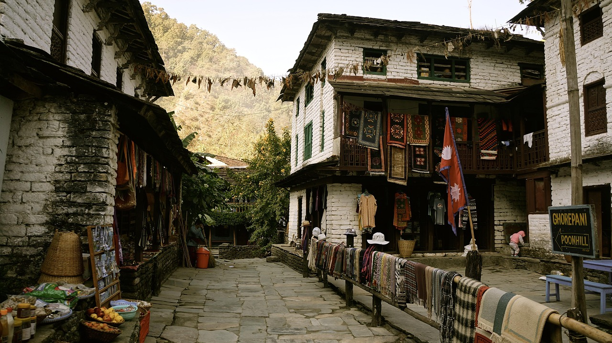
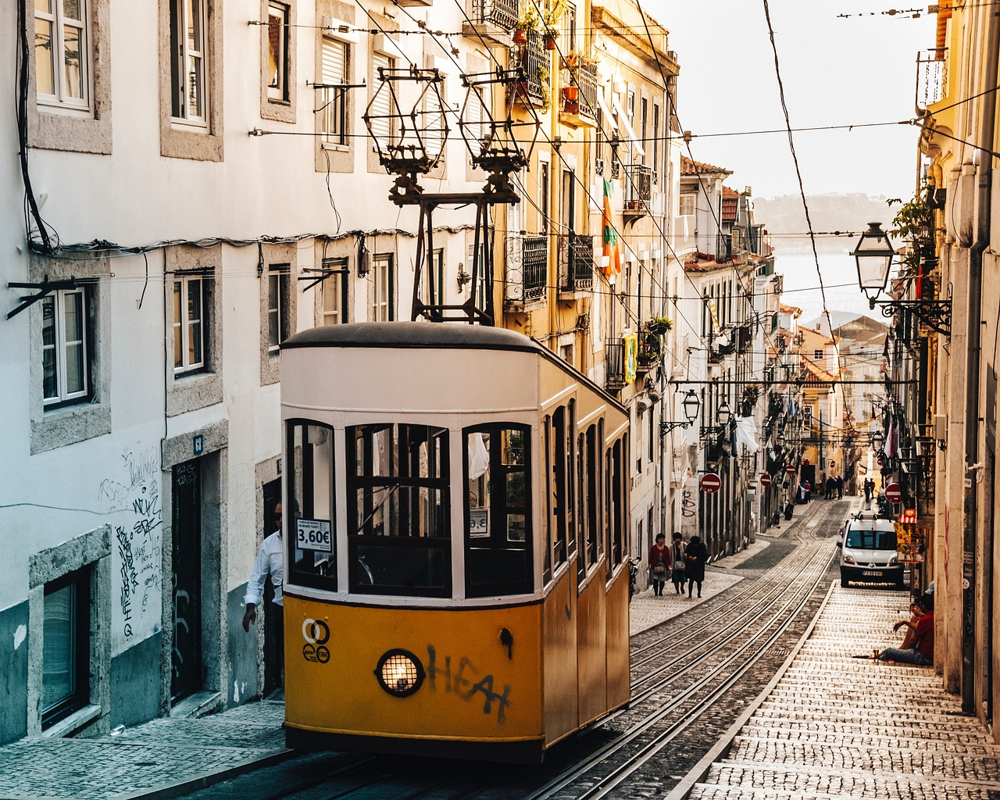
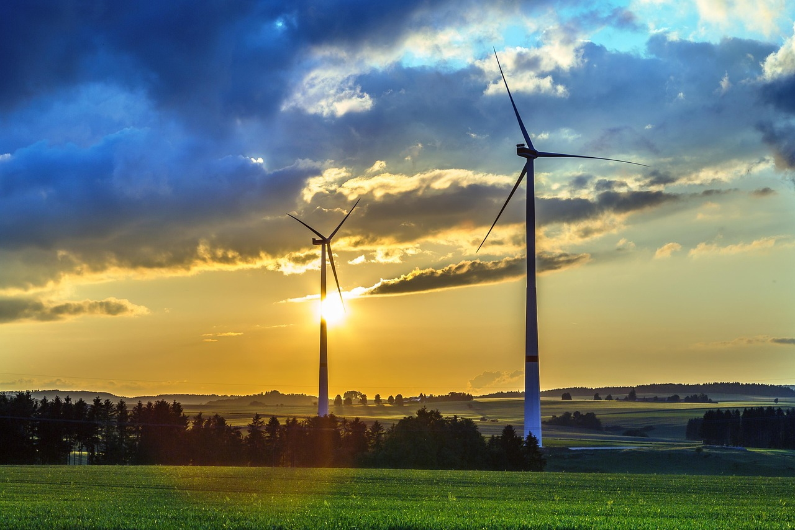
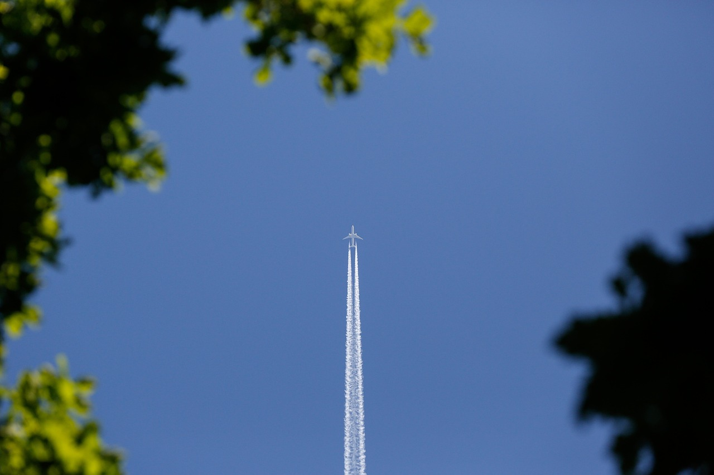

Wie man reisen kann - von Flugzeug bis Fahrrad
Willkommen auf unserer Website rund ums Reisen. Hier erfährst du, wie vielfältig Mobilität sein kann – von schnellen Flugreisen bis zu nachhaltigen Fahrradtouren.

Reisen – mehr als nur Fortbewegung
Reisen ist ein zentraler Teil unseres Lebens. Ob wir zur Arbeit pendeln, Freunde besuchen oder neue
Länder entdecken – die Art, wie wir reisen, beeinflusst nicht nur unsere Erlebnisse, sondern auch
die Umwelt. In den letzten Jahrzehnten haben sich die Möglichkeiten enorm erweitert: Moderne
Flugzeuge bringen uns in wenigen Stunden ans andere Ende der Welt, während Fahrräder und Züge uns

erlauben, die Natur intensiver zu erleben.

Doch welches Verkehrsmittel ist das richtige für dich? Es hängt von vielen Faktoren ab – vom Ziel, vom Budget, vom Zeitrahmen und natürlich vom eigenen Umweltbewusstsein. Unsere Website hilft dir, die verschiedenen Optionen besser zu verstehen und miteinander zu vergleichen.

Nachhaltig reisen – Verantwortung übernehmen
Immer mehr Menschen achten heute darauf, wie sie reisen. Nachhaltiges Reisen bedeutet, bewusster zu wählen – nicht nur das Ziel, sondern auch den Weg dorthin. Es geht darum, CO₂-Emissionen zu reduzieren, regionale Angebote zu nutzen und respektvoll mit Mensch und Natur umzugehen.
Auch kleine Veränderungen können einen Unterschied machen: Eine Bahnreise statt eines Kurzstreckenflugs, die Wahl eines Fahrrads statt des Autos oder das Teilen von Fahrten mit anderen. Jeder Schritt zählt.
